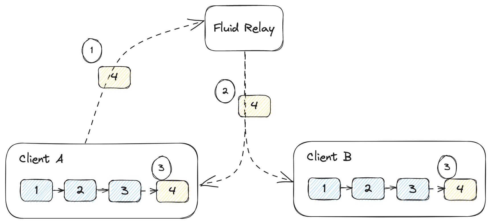
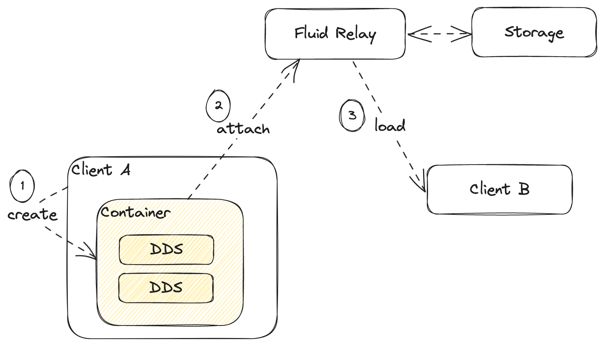

Mental Poker Part 2: Fluid Ledger
In the previous post I covered the cryptography part of implementing Mental Poker. In this post, I'll cover the append-only list data structure used to model games.
As I mentioned before, we rely on Fluid Framework. The code is available in my GitHub fluid-ledger repo.
Fluid Framework
I touched on Fluid Framework before so I won't describe in detail what the library is about. Relevant to this blog post, we have a set of distributed data structures that multiple clients can update concurrently. All clients in a session connect to a service (like the Azure Fluid Relay service). Each update a client makes to a distributed data structure gets sent to the service as an operation. The service stamps a sequence number on the operation and broadcasts it to all clients. That means that eventually, all clients end up with the same list of operations in the same sequence, so they can merge changes client-side while ensuring all clients end up with the same view of the world.
The neat thing about Fluid Framework is the fact that merges happen on the clients as described above rather than server-side. The service doesn't need to understand the semantics of each data structure. It only needs to sequence operations. Different data structures implement their own merge logic. The framework provides some powerful out-of-the-box data structures like a sparse matrix or a tree. But we don't need such powerful data structures to model games: a list is enough.
Append-only list
Most turn-based games can be modeled as a list of moves. This includes games like chess, but also card games. The whole Mental Poker shuffling protocol we discussed, where one player encrypts and shuffles the deck, then hands it over to the other player to do the same etc. is also, in fact, a sequence of moves.
The semantics of a particular game are implemented at a higher level. The types of games we are looking at though can be modeled as a list of moves, where players take turns. Each move is an item in the list. In this blog post we're looking at the generic list data structure, without worrying too much about how a move looks like.
A list is a very simple data structure, but let's see how this looks like in the context of Fluid Framework. Here, we have a distributed data structure multiple clients can concurrently update.
Fluid ledger
I named the data structure ledger, as it should act very much as a ledger from the crypto/blockchain world - an immutable record of what happened. In our case, this contains a list of game moves.
The Fluid Framework implementation is fairly straight-forward: when a client wants to append an item to the list, it sends the new item to the Fluid Relay service. The service sequences the append, meaning it adds the sequence number and broadcasts it to all clients, including the sender. The local data structure only gets appended once received from the service. That guarantees all clients end up with the same list, even if they concurrently attempt to append items to it.

The diagram shows how this works when Client A wants to append 4 to the
ledger:
- The new item
4is sent to the Relay Service. - The relay service broadcasts it to all clients.
- Clients receive the new item and append it to the list.
Interfaces
Our API consists of two interfaces, ILedgerEvents, representing the events
that our data structure can fire, and ILedger, the API of our data structure.
We derive these from ISharedObjectEvents and ISharedObject, which are
available in Fluid Framework. We also need the Serializable type, which
represents data that can be serialized in the Fluid Framework data store:
import {
ISharedObject,
ISharedObjectEvents
} from "@fluidframework/shared-object-base";
import { Serializable } from "@fluidframework/datastore-definitions";
With these imports, we can define our ILedgerEvents as:
export interface ILedgerEvents<T> extends ISharedObjectEvents {
(event: "append", listener: (value: Serializable<T>) => void): void;
(event: "clear", listener: (values: Serializable<T>[]) => void): void;
}
T is the generic type of the list items. The append event is fired after
we get an item from the Fluid Relay service and the item is appended to the
ledger. The clear event is fired when we get a clear operation from the
Fluid Relay service and the ledger is cleared. The event will return the full
list of items that have been removed as values.
We can also defined ILedger as:
export interface ILedger<T = any> extends ISharedObject<ILedgerEvents<T>> {
get(): IterableIterator<Serializable<T>>;
append(value: Serializable<T>): void;
clear(): void;
}
The get() function returns an iterator over the ledger. append() appends
a value and clear() clears the ledger.
The full implementation can be found in interfaces.ts.
Factory
We also need to provide a LedgerFactory the framework can use to create or
load our data structure.
We need to import a handful of types from the framework, our ILedger
interface, and our yet-to-be-implemented Ledger:
import {
IChannelAttributes,
IFluidDataStoreRuntime,
IChannelServices,
IChannelFactory
} from "@fluidframework/datastore-definitions";
import { Ledger } from "./ledger";
import { ILedger } from "./interfaces";
We can now define the factory as implementing the IChannelFactory interface:
export class LedgerFactory implements IChannelFactory {
...
}
We'll cover the implementation step-by-step. First, we need a couple of static properties defining the type of the data structure and properties of the channel:
public static readonly Type = "fluid-ledger-dds";
public static readonly Attributes: IChannelAttributes = {
type: LedgerFactory.Type,
snapshotFormatVersion: "0.1",
packageVersion: "0.0.1"
public get type() {
return LedgerFactory.Type;
}
public get attributes() {
return LedgerFactory.Attributes;
}
};
Type just needs to be a unique value for our distributed data structure.
We'll define it as fluid-ledger-dds. The channel Attributes are used by
the runtime for versioning purposes.
You can think of the way Fluid Framework stores data as similar to git. In git
we have snapshots and commits. Fluid Framework uses a similar mechanism, where
the service records all operations sent to it (this is the equivalent of a
commit) and periodically takes a snapshot of the current
state of the world.
When a client connects and wants to get up to date, it tells the service what is the last state it saw and the service sends back what happened since. This could include the latest snapshot (if the client doesn't have it) and a bunch of operations that have been sent by clients after the latest snapshot.
In case we iterate on our data structure, we need to tell the runtime which snapshot format and which ops our client understands.
The interface we are implementing (IChannelFactory) includes a load()
and a create() function.
Here is how we load a ledger:
public async load(
runtime: IFluidDataStoreRuntime,
id: string,
services: IChannelServices,
attributes: IChannelAttributes
): Promise<ILedger> {
const ledger = new Ledger(id, runtime, attributes);
await ledger.load(services);
return ledger;
}
This is pretty straightforward: we construct a new instance of Ledger (we'll
look at the Ledger implementation in a bit), call load(), and return the
object. This is an async function. No need to worry about the arguments as the
framework will handle these - we just plumb them through.
create() is similar, except this is synchronous:
public create(document: IFluidDataStoreRuntime, id: string): ILedger {
const ledger = new Ledger(id, document, this.attributes);
ledger.initializeLocal();
return ledger;
}
Instead of calling the async ledger.load(), we call initializeLocal(). We
again don't have to cover the arguments, but let's talk about the difference
between creating and loading.
In order to understand these, we need to introduce a new concept: the Fluid container.
The container is a collection of distributed data structures defined by a
schema. This describes the data model of an application. In our case, to model
a game, we only need a ledger. For more complex applications, we might need
to use multiple distributed data structures. Fluid Framework uses containers
as the unit
of data - we will never instantiate or use a distributed data
structure standalone. Even if we only need one, as in our case, we still need
to define a container.

The lifecycle shown in the diagram is:
- A client creates a container locally (this is where
create()comes into play). Based on the provided schema, the runtime will callcreate()for all described data structures. At this point, we haven't yet connected to the Fluid Relay. We are in what is called detached mode. Here we have the opportunity to update our data structures before we connect and have other clients see them. - We attach the container, meaning we connect to the Relay Service and start a multi-user session. We can now expect changes to come in from other clients.
- Another client can now connect to the session. On this second client, since
the container was already created, the runtime will rely on the
load()functions to hydrate it.
As a side note, the Fluid Relay can also store documents to persistent storage so once the coauthoring session is over and all clients disconnect, the document is persistent for future sessions.
For our Mental Poker application, we don't need to worry too much about
containers and schemas, we only need a minimal implementation consisting of a
container with a single distributed data structure: our Ledger. But it is
worth understanding how the runtime works.
We went over the full implementation of the LedgerFactory. You can also find
it in ledgerFactory.ts.
Implementation
Let's now look at the actual implementation and learn about the anatomy of a Fluid distributed data structure.
We need to import several types from the framework, which we'll cover as we encounter them in the code below, or won't discuss if they are boilerplate.
import {
ISequencedDocumentMessage,
MessageType
} from "@fluidframework/protocol-definitions";
import {
IChannelAttributes,
IFluidDataStoreRuntime,
IChannelStorageService,
IChannelFactory,
Serializable
} from "@fluidframework/datastore-definitions";
import { ISummaryTreeWithStats } from "@fluidframework/runtime-definitions";
import { readAndParse } from "@fluidframework/driver-utils";
import {
createSingleBlobSummary,
IFluidSerializer,
SharedObject
} from "@fluidframework/shared-object-base";
import { ILedger, ILedgerEvents } from "./interfaces";
import { LedgerFactory } from "./ledgerFactory";
Note the last two imports: we import our interfaces and our LedgerFactory.
We'll define a couple of delta operations. That's the Fluid Framework name for an operation (op) we send to the (or get back from) Fluid Relay service.
type ILedgerOperation = IAppendOperation | IClearOperation;
interface IAppendOperation {
type: "append";
value: any;
}
interface IClearOperation {
type: "clear";
}
In our case, we can have either an IAppendOperation or an IClearOperation.
The two together define the ILedgerOperation type.
The IAppendOperation includes a value property which can be anything. Both
IAppendOperation and IClearOperation have a type property, so we can see
at runtime which type we are dealing with.
We talked about how Fluid Framework is similar to git in the way it stores documents as snapshots and ops. A lot of this is handled internally by the framework, but our data structure needs to tell the service how we want to name the snapshots, so we'll define a constant for this:
const snapshotFileName = "header";
With this, we can start the implementation of Ledger.
export class Ledger<T = any>
extends SharedObject<ILedgerEvents<T>>
implements ILedger<T>
{
...
}
We derive from SharedObject, the base distributed data structure type. We
specify that this SharedObject will be firing ILedgerEvents and that it
implements the ILedger interface.
The framework expects a few functions used to construct objects. Our constructor looks like this:
constructor(
id: string,
runtime: IFluidDataStoreRuntime,
attributes: IChannelAttributes
) {
super(id, runtime, attributes, "fluid_ledger_");
}
The constructor takes an id, a runtime, and channel attributes. We don't
need to deeply understand these, as they are handled and passed in by the
framework. The last argument of the base class constructor is a telemetry
string prefix. We just need to provide a string unique to our data structure,
so we use fluid_ledger_ in our case.
We also need a couple of static functions: create() and getFactory():
public static create(runtime: IFluidDataStoreRuntime, id?: string) {
return runtime.createChannel(id, LedgerFactory.Type) as Ledger;
}
public static getFactory(): IChannelFactory {
return new LedgerFactory();
}
For create(), again we don't need to worry about runtime and id, as we
won't have to pass these in ourselves. We just need this function to forward
them to runtime.createChannel(). createChannel() also requires the unique
type, which we'll get from our LedgerFactory.
The getFactory() function simply creates a new instance of LedgerFactory.
We covered the constructor and factory functions. Next, let's look at the
internal data and the required initializeLocalCore() functions:
private data: Serializable<T>[] = [];
public get(): IterableIterator<Serializable<T>> {
return this.data[Symbol.iterator]();
}
protected initializeLocalCore() {
this.data = [];
}
This is very simple - we represent our ledger as an array of Serializable<T>.
The get() function, which we defined on our IFluidLedger interface, returns
the array's iterator.
initializeLocalCore(), called internally by the runtime, simply sets data
to be an empty array.
We also need to implement saving and loading of the data structure. Save
in
Fluid Framework world is called summarize: this is what the framework uses to
create snapshots.
protected summarizeCore(
serializer: IFluidSerializer
): ISummaryTreeWithStats {
return createSingleBlobSummary(
snapshotFileName,
serializer.stringify(this.data, this.handle)
);
}
We can use a framework-provided createSingleBlobSummary. In our case, we save
the whole data array and the handle (handle is an inherited attribute
representing a handle to the data structure, which the Framework uses for
nested data structure scenarios).
Here is how we load the data structure:
protected async loadCore(storage: IChannelStorageService): Promise<void> {
const content = await readAndParse<Serializable<T>[]>(
storage,
snapshotFileName
);
this.data = this.serializer.decode(content);
}
For both summarize and load, we rely on Framework-provided utilities.
We can now focus on the non-boilerplate bits: implementing our append()
and clear(). Let's start with append():
private applyInnerOp(content: ILedgerOperation) {
switch (content.type) {
case "append":
case "clear":
this.submitLocalMessage(content);
break;
default:
throw new Error("Unknown operation");
}
}
private appendCore(value: Serializable<T>) {
this.data.push(value);
this.emit("append", value);
}
public append(value: Serializable<T>) {
const opValue = this.serializer.encode(value, this.handle);
if (this.isAttached()) {
const op: IAppendOperation = {
type: "append",
value: opValue
};
this.applyInnerOp(op);
}
else {
this.appendCore(opValue);
}
}
applyInnerOp() is common to both append() and clear(). This is the
function that takes an ILedgerOperation and sends it to the Fluid Relay
service. submitLocalMessage() is inherited from the base SharedObject.
appendCore() effectively updates data and fires the append event.
append() first serializes the provided value using the inherited
Framework-provided serializer. We assign this to opValue. We then need
to cover both the attached and detached scenarios. If attached, it means
we are connected to a Fluid Relay and we are in the middle of a coauthoring
session. In this case, we create an IAppendOperation object and call
applyInnerOp(). If we are detached, it means we created our data structure
(and its container) on this client, but we are not connected to a service
yet. In this case we call appendCore() to immediately append the value
since there is no service to send the op to and get it back sequenced.
clear() is very similar:
private clearCore() {
const data = this.data.slice();
this.data = [];
this.emit("clear", data);
}
public clear() {
if (this.isAttached()) {
const op: IClearOperation = {
type: "clear"
};
this.applyInnerOp(op);
}
else {
this.clearCore();
}
}
clearCore() effectively clears data and emits the clear event.
clear() handles both the attached and detached scenarios.
So far we update our data immediately when detached, and when attached we
send the op to the Relay Service. The missing piece is handling ops as
they come back from the Relay Service. We do this in processCore(),
another function the runtime expects us to provide:
protected processCore(message: ISequencedDocumentMessage) {
if (message.type === MessageType.Operation) {
const op = message.contents as ILedgerOperation;
switch (op.type) {
case "append":
this.appendCore(op.value);
break;
case "clear":
this.clearCore();
break;
default:
throw new Error("Unknown operation");
}
}
}
This function is called by the runtime when the Fluid Relay sends the client
a message. In our case, we only care about messages that are operations. We
only support append and clear operations. We handle these by calling the
appendCore() and clearCore() we just saw - since these ops are coming
from the service, we can safely append them to our data (we have the
guarantee that all clients will get these in the same order).
And we're almost done. We need to implement onDisconnect(), which is called
when we disconnect from the Fluid Relay. This gives the distributed data
structure a chance to run some code but in our case we don't need to do
anything.
protected onDisconnect() {}
Finally, we also need applyStashedOp(). This is used in offline mode. For
some applications, we might want to provide some functionality when offline -
a client can keep making updates, which get stashed. We won't dig into this
since for Mental Poker we can't have a single client play offline - we simply
throw an exception if this function ever gets called:
protected applyStashedOp(content: unknown) {
throw Error("Not supported");
}
The full implementation is in ledger.ts.
And that's it! We have a fully functioning distributed data structure we can use to model games.
Demo
The GitHub repo also includes a demo app: a collaborative coloring application where multiple clients can simultaneously color a drawing.
In this case, we model coloring operations as x and y coordinates, and a
color. As users click on the drawing, we append these operations to the
ledger and play them back to color the drawing using flood fill.